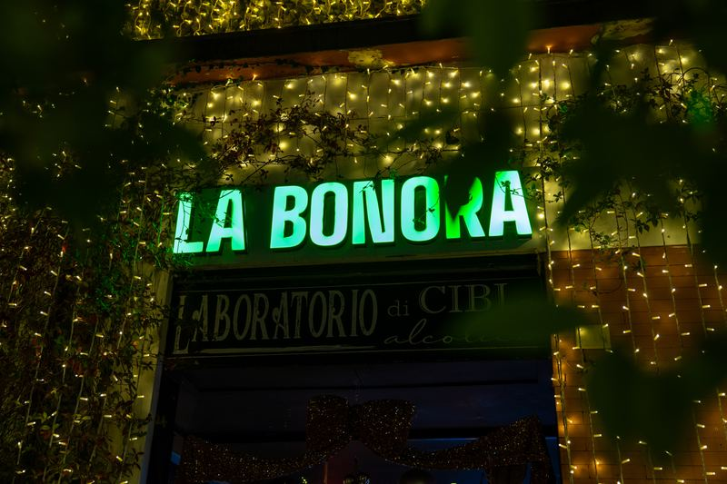
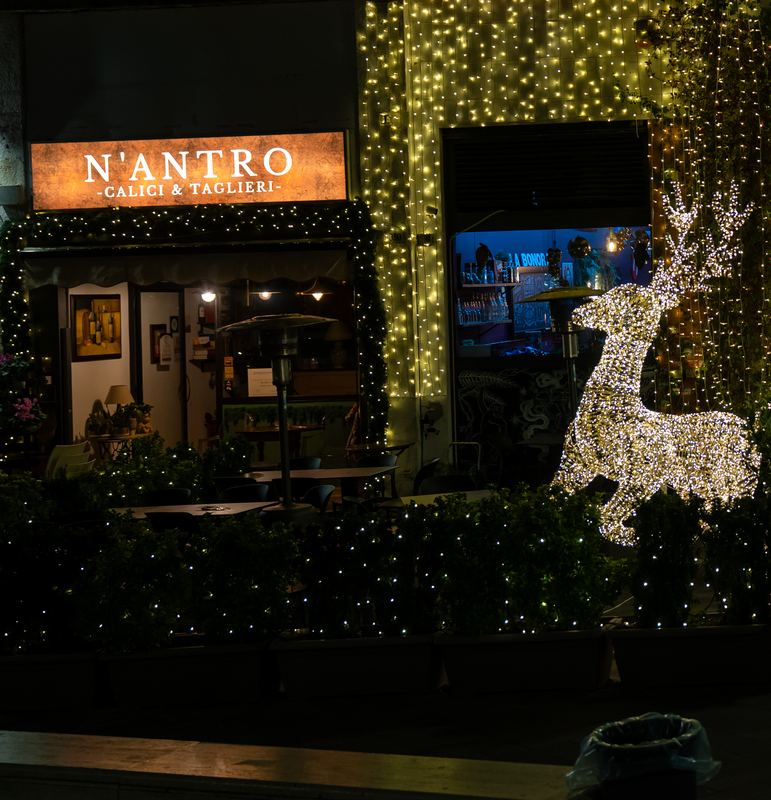
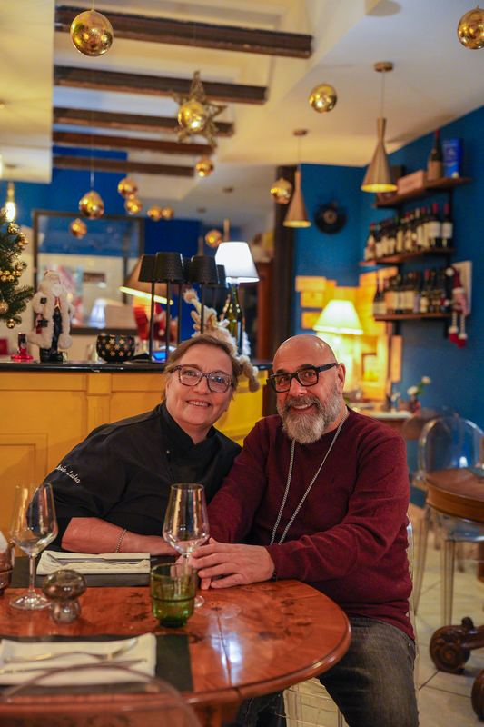
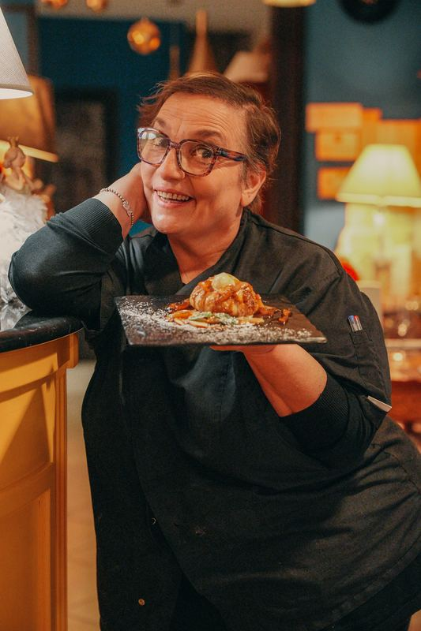
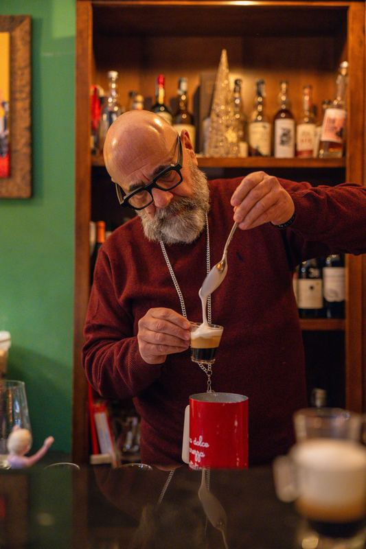
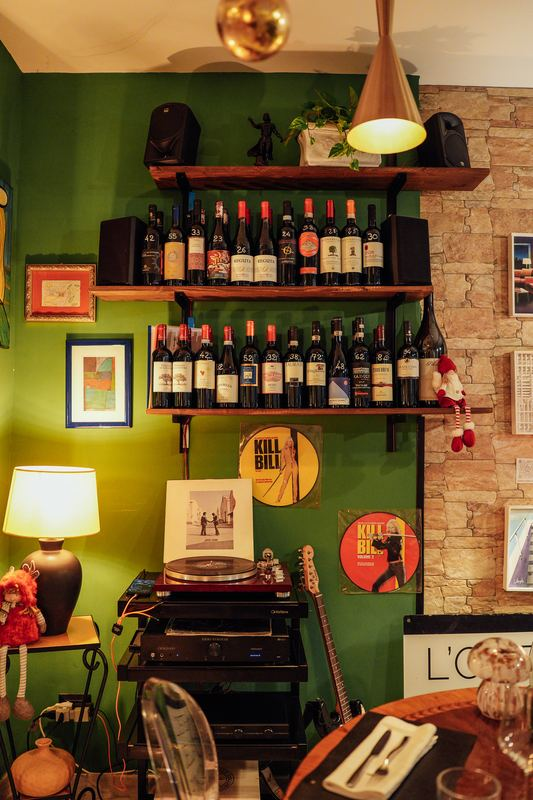

La famiglia
Una famiglia di ristoratori dal 1987. Il luogo può cambiare, la passione no.
Bozza: testo da riscrivere con Flavio.

Largo Appio Claudio 344/348
La Bonora
Il Laboratorio di Cibi e Alcolici: aperitivo, cena e dopocena, tre anime in un solo locale.
Sei qui
Largo Appio Claudio, accanto a La Bonora
N'Antro
Calici e taglieri. [Descrizione da scrivere: cosa si beve, cosa si mangia, che atmosfera ha.]
Instagram di N'Antro


